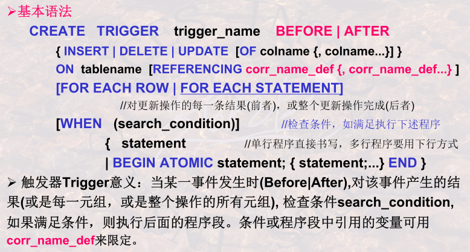

8. SQL语言与数据库完整性和并发性
8.1 数据库完整性的概念及分类
- 广义完整性、狭义完整性（语义完整性）
- 完整性约束条件：Integrity Constraint =（O，P，A，R）O：数据集合、P：谓词条件、A：触发条件、R：响应动作
- 按约束对象分（域完整性、关系完整性）；按约束来源分（结构约束、内容约束）；按约束状态分（静态约束、动态约束）
8.2 利用SQL语言实现数据库的静态完整性
create table：列约束、表约束
col_constr:
{NOT NULL | [constraint constraintname] { UNIQUE | PRIMARY KEY | CHECK(search_cond) | REFERENCES tablename [(colname)] [ON DELETE {CASCADE | SET NULL}]}}table_constr:
[constraint constraintname] { UNIQUE (colname, ...) | PRIMARY KEY (colname,...) | CHECK(search_cond) | FOREIGN KEY (colname) REFERENCES tablename [(colname)] [ON DELETE CASCADE ]}
撤销、追加约束：ALTER TABLE tblname [ADD | DROP |MODIFY]
- 用断言实现约束：CREATE ASSERTION
CHECK - 每笔贷款，要求至少一位借款者账户中存有最低数目的余额。
- 每个分行的贷款总量必须小于该分行所有账户的余额总和。
8.3 利用SQL语言实现数据库的动态完整性
触发器

8.4 数据库安全性的概念及分类
- 数据库安全性： 指DBMS 应该保证的数据库的一种特性(机制或手段)：免受非法、非授权用户的使用、泄漏、更改或破坏
- 安全性分类：自主安全机制、强制安全机制
- 强制安全性机制是通过对数据和用户强制分类，从而使得不同类别用户能够访问不同级别的数据
- 推断控制机制是防止通过历史信息或统计信息，推断出不该被其知道的信息，防止通过公开信息推断出私密信息
8.5 数据库自主安全机制
- 通过授权机制实现：授权者，授权
- 安全性规则：AccessRule = (S，O，t，P) S：请求主体( 用户) O：访问对象t：访问权利 P：谓词
- 两种控制示例：存储矩阵、视图
- SQL语言：GRANT、Revoke
- GRANT PRIVILEGES ON tablename | viewname TO public | userid [with grant option]
- REVOKE all privileges ON tablename | viewname FROM public
- 自主安全性的授权过程、注意授权的传播范围
- 强制安全性对数据对象和用户进行安全性分级
8.6 习题
- Create Table 功能：定义关系模式、定义完整性约束、定义物理存储特性
- 安全性控制的防范对象是非法非授权用户，防止他们对数据库数据的存取
- 在数据库的安全性控制中，授权的数据对象的范围越小，授权子系统就越灵活
- Col_constr列约束：只能应用在单一列上，其后面的约束如UNIQUE、PRIMARY KEY及search_cond 只能是单一列唯一、单一列为主键、和单一列相关。FOREIGN KEY 为 table_constr 表约束